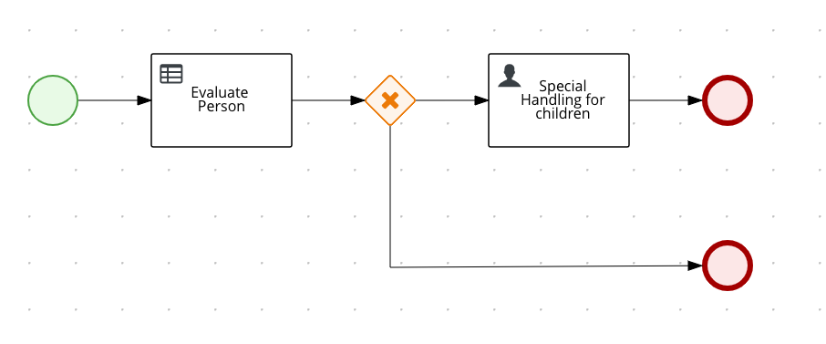

Kogito を使用してアプリケーションにビジネスオートメーションの機能を追加する
このガイドでは、QuarkusアプリケーションがKogitoを使用してビジネスオートメーションを追加し、ビジネスプロセスとルールでパワーアップする方法を説明します。
Kogitoは、有名なオープンソースプロジェクトであるDrools (ビジネスルール用)とjBPM (ビジネスプロセス用)から生まれた次世代のビジネスオートメーションツールキットです。Kogitoは、ビジネスナレッジ(プロセス、ルール、意思決定、予測)をドメイン固有の方法で公開することを主なメッセージとするビジネスオートメーションへの別のアプローチを提供することを目的としています。
前提条件
このガイドを完成させるには、以下が必要です:
-
約15分
-
IDE (VSCode is preferred with the Red Hat BPMN Editor VSCode Extension)
-
JDK 11+ がインストールされ、
JAVA_HOMEが適切に設定されていること -
Apache Maven 3.8.6
-
動作するコンテナランタイム(Docker, Podman)
-
使用したい場合は、 Quarkus CLI
-
ネイティブ実行可能ファイルをビルドしたい場合、MandrelまたはGraalVM（あるいはネイティブなコンテナビルドを使用する場合はDocker）をインストールし、 適切に設定していること
モデリングプラグインをIDEにインストールする
Kogito Toolingは現在VSCodeでオンラインおよび他のプラットフォームでサポートされています。
- VSCode
-
VSCode IDE からプロセス定義を編集およびモデル化するために、 Red Hat BPMN エディタ VSCode エクステンション をダウンロードしてインストールします。
- オンライン
-
モデラーのインストールを避けるために、BPMN.new を直接使用して、お気に入りのWebブラウザを使ってプロセスの設計とモデリングを行うことができます。
- Eclipse
-
プロセスのビジュアル・モデリングを利用するには、Eclipse IDEをダウンロードし、MarketplaceからEclipse BPMN2 Modellerプラグイン（with jBPM Runtime Extension）をインストールします。
- その他のプラットフォーム
-
Business Modeler Hubでは、Kogito toolingリリースでサポートされている最新のプラットフォームをダウンロードすることができます。
アーキテクチャ
ソリューション
次の章で紹介する手順に沿って、ステップを踏んでアプリを作成することをお勧めします。ただし、完成した例にそのまま進んでも構いません。
Gitリポジトリをクローンする： git clone https://github.com/quarkusio/quarkus-quickstarts.git 、またはhttps://github.com/quarkusio/quarkus-quickstarts/archive/main.zip[archive] をダウンロードする。
ソリューションは kogito-quickstart ディレクトリー にあります。
Mavenプロジェクトの作成
まず、新しいプロジェクトが必要です。以下のコマンドで新規プロジェクトを作成します:
このコマンドはMavenプロジェクトを生成し、アプリケーションにビジネス・オートメーションを装備するために必要な依存関係と設定をすべて備えた kogito エクステンションをインポートします。また、KogitoがRESTサービスを公開するのに必要な resteasy-reactive-jackson エクステンションをインポートします。
すでにQuarkusプロジェクトが設定されている場合は、プロジェクトのベースディレクトリーで以下のコマンドを実行することで、プロジェクトに kogito エクステンションを追加することができます。
quarkus extension add 'kogito'./mvnw quarkus:add-extension -Dextensions='kogito'./gradlew addExtension --extensions='kogito'これにより、 pom.xml に以下が追加されます:
<dependency>
<groupId>org.kie.kogito</groupId>
<artifactId>kogito-quarkus</artifactId>
</dependency>implementation("org.kie.kogito:kogito-quarkus")アプリケーションの記述
まずはシンプルなデータオブジェクト Person を実装してみましょう。下のソースコードを見ればわかるように、ただのPOJOです。
package org.acme.kogito.model;
public class Person {
private String name;
private int age;
private boolean adult;
public String getName() {
return name;
}
public void setName(String name) {
this.name = name;
}
public int getAge() {
return age;
}
public void setAge(int age) {
this.age = age;
}
public boolean isAdult() {
return adult;
}
public void setAdult(boolean adult) {
this.adult = adult;
}
@Override
public String toString() {
return "Person [name=" + name + ", age=" + age + ", adult=" + adult + "]";
}
}次に、生成されたプロジェクトの src/main/resources/org/acme/kogito フォルダー内にルールファイル person-rules.drl を作成します。
package org.acme.kogito;
unit PersonUnit;
import org.acme.kogito.model.Person;
rule "Is adult"
when
$person: /person[age > 18]
then
modify($person) {
setAdult(true)
};
endこれは本当にシンプルなルールで、18歳以上の人を大人としてマークしています。
このルール例では、ルール・ユニットを使用しています。これは、Kogitoで導入された新しい概念で、ルールのセットと、それらのルールが照合されるファクトをカプセル化するのに役立ちます。挿入されたファクトは、型安全なエントリ・ポイントである DataStore に挿入されます。すべてを機能させるためには、 src/main/java/org/acme/kogito ディレクトリ内に新しいクラス PersonUnit を作成して、RuleUnit と DataStore の両方を定義する必要があります。
package org.acme.kogito;
import org.acme.kogito.model.Person;
import org.kie.kogito.rules.DataSource;
import org.kie.kogito.rules.RuleUnitData;
import org.kie.kogito.rules.SingletonStore;
public class PersonUnit implements RuleUnitData {
private SingletonStore<Person> person;
public PersonUnit() {
this(DataSource.createSingleton());
}
public PersonUnit(SingletonStore<Person> person) {
this.person = person;
}
public SingletonStore<Person> getPerson() {
return person;
}
public void setPerson(SingletonStore<Person> person) {
this.person = person;
}
}最後に、このルールを利用して、指定された人物を承認するビジネスプロセスを作成します。新規項目ウィザード(File → New → Other → BPMN2 Model)を使用して、生成されたプロジェクトの src/main/resources/org/acme/kogito フォルダー内に persons.bpmn を作成します。
このプロセスは次のように構成されています。
-
スタートイベント
-
ビジネスルールタスク
-
専用ゲートウェイ
-
ユーザータスク
-
エンドイベント
そして、次のようになるはずです。

簡単に開始するには、https://github.com/quarkusio/quarkus-quickstarts/tree/main/kogito-quickstart/src/main/resources/org/acme/kogito/persons.bpmn2[quickstart]からプロセス定義をコピーします。
このプロセスを自分でモデル化するには、以下の手順に従ってください(開始イベントが自動的に追加されます)。
-
org.acme.kogito.model.Person型のpersonという名前を持つプロセス変数を定義します。 -
タスク→ビジネスルールタスクをパレットからドラッグしてスタートイベントの横にドロップし、スタートイベントとリンクさせます。
-
ビジネスルールタスクをダブルクリックする
-
I/O パラメータータブで、データの入出力を設定します (
personプロセス変数をpersonという名前の入力データにマップし、データの出力も同じにします)。 -
ビジネス・ルール・タスクタブで、ルール・フロー・グループを
unit:プレフィックス (unit:org.acme.kogito.PersonUnit) を用いた RuleUnit の FQCN 値に設定します。
-
-
-
パレットからGateways → XOR gatewayをドラッグして、ビジネスルールタスクの横にドロップし、ルールタスクとリンクさせます。
-
パレットからTasks → User Taskをドラッグしてゲートウェイの横にドロップし、ゲートウェイと連携させます。
-
ユーザータスクをダブルクリックする
-
ユーザータスクのタブで、タスク名を
ChildrenHandlingに設定します。 -
I/O パラメータータブで、データ入力を設定します(
personプロセス変数をpersonという名前の入力データにマップします)。
-
-
-
パレットからEnd Events → Endをドラッグして、ユーザータスクの横にドロップして、ユーザータスクとリンクさせます。
-
パレットからEnd Events → Endをドラッグして、ゲートウェイの横にドロップして、ユーザータスクとリンクさせます。
-
ゲートウェイをダブルクリックする
-
Gateway タブで、ゲートウェイの分岐方向を設定します。
-
Gateway タブで、シーケンスフローリストの条件を設定します。
-
→ イベント
return person.isAdult() == true;をJava言語で終了させる。 -
→ ユーザータスク
return person.isAdult() == false;をJava言語で終了させる。
-
-
-
ファイルの保存
アプリケーションの実行と使用
開発モードでの実行
マイクロサービスをdevモードで実行するには:
quarkus dev./mvnw quarkus:dev./gradlew --console=plain quarkusDevJVMモードでの動作
「開発モード」で遊び終わったら、標準のJavaアプリケーションとして実行することができます。
まずコンパイルします。
quarkus build./mvnw install./gradlew build次に、以下を実行してください。
java -jar target/quarkus-app/quarkus-run.jarネイティブモードでの実行
同じデモをネイティブコードにコンパイルすることができます。
これは、生成されたバイナリーにランタイム技術が含まれており、最小限のリソースオーバーヘッドで実行できるように最適化されているため、本番環境にJVMをインストールする必要がないことを意味します。
コンパイルには少し時間がかかるので、このステップはデフォルトでは無効になっています。以下のコマンドでネイティブ実行可能ファイルをビルドしてみましょう。
quarkus build --native./mvnw install -Dnative./gradlew build -Dquarkus.package.type=nativeコーヒーを飲み終わると、このバイナリーは以下のように直接実行出来るようになります:
./target/kogito-quickstart-1.0.0-SNAPSHOT-runnerアプリケーションのテスト
アプリケーションをテストするには、人をJSONペイロードとして指定してサービスにリクエストを送信するだけです。
curl -X POST http://localhost:8080/persons \
-H 'content-type: application/json' \
-H 'accept: application/json' \
-d '{"person": {"name":"John Quark", "age": 20}}'レスポンスの中では、本人は成人として認められているべきであり、それもレスポンスのペイロードの中で見えるようにしなければなりません。
{"id":"dace1d6a-a5fa-429d-b253-d6b66e265bbc","person":{"adult":true,"age":20,"name":"John Quark"}}アクティブなインスタンスがないことを確認することもできます。
curl -X GET http://localhost:8080/persons \
-H 'content-type: application/json' \
-H 'accept: application/json'未成年のケースを確認するには、年齢を18歳未満に設定して別のリクエストを送信してください。
curl -X POST http://localhost:8080/persons \
-H 'content-type: application/json' \
-H 'accept: application/json' \
-d '{"person": {"name":"Jenny Quark", "age": 15}}'今回はアクティブなインスタンスが一つあるはずなので、 {uuid} をレスポンスから取得した id 属性に置き換えてください。
curl -X GET http://localhost:8080/persons/{uuid}/tasks \
-H 'content-type: application/json' \
-H 'accept: application/json'別のエンドポイントを呼び出すことでタスクの詳細を取得することができます。 uuids をレスポンスから取得した値( uuid-1 はプロセスインスタンス ID、 uuid-2 はタスクインスタンス ID)に置き換えてください。最初の値はプロセスインスタンスIDに、もう一方の値はタスクインスタンスIDに対応します。
curl -X GET http://localhost:8080/persons/{uuid-1}/ChildrenHandling/{uuid-2} \
-H 'content-type: application/json' \
-H 'accept: application/json'同じエンドポイントをPOSTで呼び出して、 uuids をレスポンスから取得した値( uuid-1 はプロセスインスタンス ID、 uuid-2 はタスクインスタンス ID)で置き換えて、この人物評価プロセスインスタンスを完成させることができます。
curl -X POST http://localhost:8080/persons/{uuid-1}/ChildrenHandling/{uuid-2} \
-H 'content-type: application/json' \
-H 'accept: application/json' \
-d '{}'永続化を有効にする
Kogito の 0.3.0 以降、アプリケーションの再起動時にプロセスインスタンスの状態を保持するために永続性を有効にするオプションがあります。これにより、いつでも再開できる長時間稼働しているプロセスインスタンスをサポートします。
前提条件
Kogitoでは、永続化サービスとしてInfinispanを使用しているため、Infinispanサーバーがインストールされている必要があります。InfinispanのバージョンはQuarkusのBOMに合わせているので、正しいバージョンがインストールされていることを確認してください。
プロジェクトに依存関係を追加する
<dependency>
<groupId>io.quarkus</groupId>
<artifactId>quarkus-infinispan-client</artifactId>
</dependency>
<dependency>
<groupId>org.kie.kogito</groupId>
<artifactId>infinispan-persistence-addon</artifactId>
</dependency>implementation("io.quarkus:quarkus-infinispan-client")
implementation("org.kie.kogito:infinispan-persistence-addon")Infinispan サーバーとの接続を設定する
src/main/resources/application.properties ファイルに以下を追加します(存在しない場合は作成してください)。
quarkus.infinispan-client.server-list=localhost:11222| Infinispan サーバーのインストールに合わせて、ホストとポート番号を調整します。 |
永続性を有効にしたテスト
プロジェクト レベルで永続性を設定した後、アプリケーションの再起動時にプロセス インスタンスの状態が保持されているかどうかをテストして確認できます。
-
Infinispan サーバーを起動する
-
プロジェクトをビルドおよび実行する
-
ノンアダルトユースケースを実行する
curl -X POST http://localhost:8080/persons \
-H 'content-type: application/json' \
-H 'accept: application/json' \
-d '{"person": {"name":"Jenny Quark", "age": 15}}'アクティブなインスタンスがあることを確認することもできます。
curl -X GET http://localhost:8080/persons \
-H 'content-type: application/json' \
-H 'accept: application/json'Infinispan サーバーを稼働させている間にアプリケーションを再起動します。
全く同じ ID を持つアクティブなインスタンスが表示されているかどうかを確認します。
curl -X GET http://localhost:8080/persons \
-H 'content-type: application/json' \
-H 'accept: application/json'Kogito の永続化について詳しく知りたい方は こちらのページ をご覧ください。
DMN のディシジョンテーブルの使用
Kogitoは、Droolsのように、宣言型ロジックの視覚的かつ意味的な実行のための DMNオープン・スタンダードをサポートしています。この例のビジネス・ルールは、DRLやRuleUnitsの代わりに、DMN意思決定テーブルやその他のDMNの視覚的なパラダイムを使って表現することもできます。
KogitoでのDMNサポートの詳細については、QuarkusでのKogito DMNサポートに特化したQuarkus手引きガイド、または以下のリンクにあるKogitoのドキュメントを参照してください。
レガシー意思決定テーブルの使用
Kogitoでは、Microsoft Excelファイルフォーマットを使用して、ビジネスルールをディシジョンテーブルとして定義することができます。このようなアセットをアプリケーションで使用するには、追加の依存関係が必要です。
<dependency>
<groupId>org.kie.kogito</groupId>
<artifactId>drools-decisiontables</artifactId>
</dependency>implementation("org.kie.kogito:drools-decisiontables")依存関係がプロジェクトに追加されると、 xls や xlsx 形式のディシジョンテーブルを適切に扱うことができます。